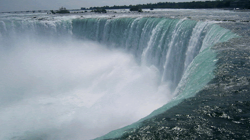
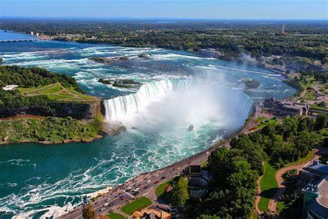
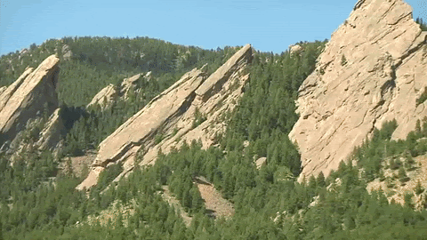
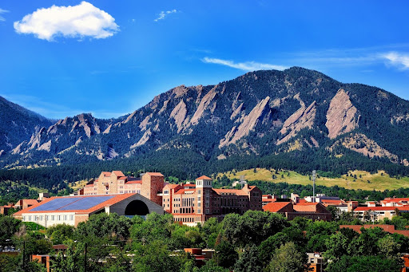
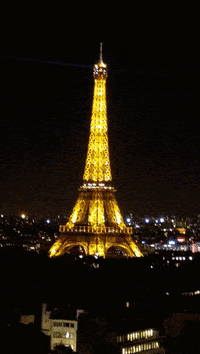
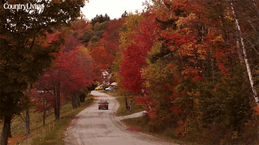
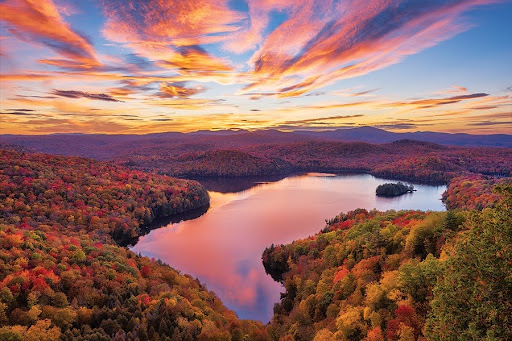

Welcome to the Travels Page!
Yellowstone

- A large mound of multi-colored travertine
- Mammoth Hot Springs has a number of actively forming Travertine terraces.

- Sunset over mountains with some charred trees in the foreground
- The drive to Lamar Valley requires some dangerous roads. But the result is amazing sunset views.
- The multicolored layers get their hues from different species of bacteria living in the cooler water around the spring.
- The buffalo were so common along the roads in Yellowstone that our mantra became "If it ain't lickin the car, we aren't stopping."

- If you can handle the odor, the Yellowstone Sulphur Springs is a great place to hike.
Niagra Falls
Geographical Location
Niagara Falls is located on the border between Canada and the United States. Connecting Lake Erie and Lake Ontario, Niagara Falls has the highest flow rate of any waterfall in North America.
Niagara Falls draws in thousands of visitors every year, and for good reason. As such, there are numerous things that you can see while you visit the falls, and it is very easy to make a full trip out of seeing this wonderful sight.
- 
- 
Boulder Colorado
Gegraphical Location: North America
Boulder, Colorado is where the Buffalo Roam. It is home to my Alma Mater, the University of Colorado! There are many hiking locations near the city center, most notably Chautauqua Park.
Boulder, Colorado is a small city of about 104,000 people, about a quarter of which are students that attend the University of Colorado. They city is a vibrant start-up hub that is a center for technology and innovation much like Ann Arbor is.
- 
- 
Paris, France
Gegraphical Location: Europe
Paris is located in France in Europe and is a huge tourist attraction in Europe
- 

Vermont
Gegraphical Location: Canada
Vermont, located in the northeastern United States, is a state renowned for its natural beauty and charm. It is known for its breathtaking mountain ranges, serene lakes, dense forests, and captivating rural landscapes. The Green Mountain National Forest covers much of the state, offering abundant outdoor activities and adventure opportunities. In winter, skiers flock here to enjoy snow-covered slopes, while summer beckons hikers, cyclists, and campers to explore its pristine wilderness. Furthermore, Vermont boasts picturesque small towns with a countryside vibe and a unique farming landscape, making it a destination where rural charm thrives. Whether you're seeking the beauty of nature or embracing a tranquil way of life, Vermont is a place worth visiting.
Vermont is celebrated not only for its natural beauty but also for its distinctive culture and historical heritage. The state, as the 14th to join the United States, is considered one of the birthplaces of the American Revolution, and as a result, it is rich in historical landmarks and monuments. Additionally, Vermont takes pride in its emphasis on environmentalism and sustainable living, with communities often encouraging organic farming, farmers' markets, and craftsmanship. Furthermore, the state is well-known for its vibrant arts and music culture, offering a plethora of cultural experiences with various music festivals, art galleries, and performing arts venues. In essence, Vermont is a place where the blend of natural splendor, historical legacy, and cultural vibrancy attracts people of diverse interests and backgrounds to explore its wonders.
- 
- 